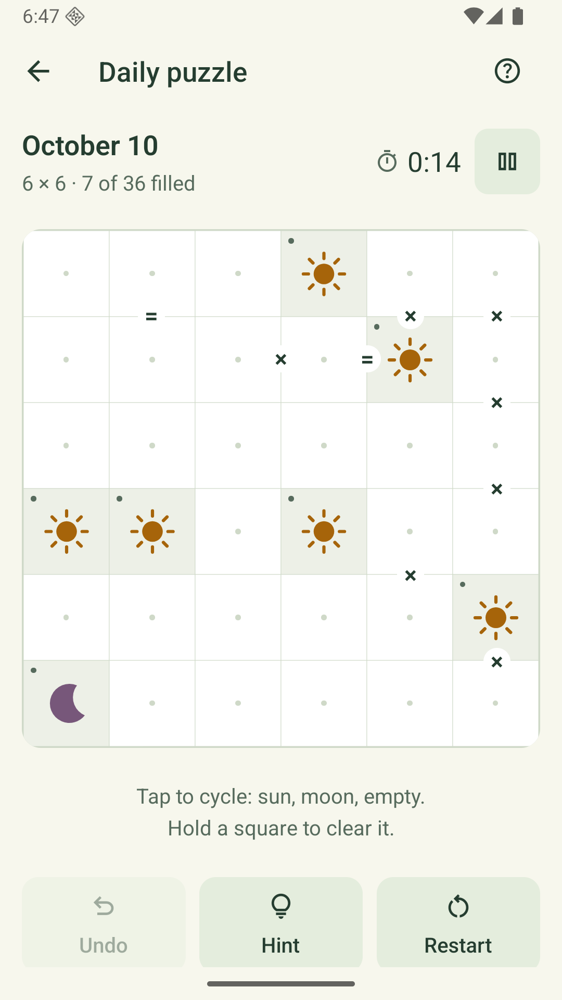

Calm your mind,
one puzzle a day.
Balance suns and moons in a daily logic puzzle, or follow an endless path of levels.
Take your time with hints, undo and a timer you can pause. Your progress stays on your phone.
Ask for Android beta accessSolstice is in closed testing on Google Play. Access requires joining the approved tester list; public release is coming after testing and review. The app contains ads when available.
Learn how to play
How to play Solstice
Fill the empty squares with suns or moons. Every puzzle has one solution.
- Each row and column needs equal numbers of suns and moons.
- No three matching symbols can sit next to each other in a row or column.
- An equals clue means its neighboring squares match. A cross clue means they differ.
- The starting clues stay locked. Tap other squares to cycle through sun, moon and empty; hold to clear.
Use a hint when you get stuck. Restart clears your moves while keeping elapsed time; Pause hides the board and stops the clock. Share a spoiler-free result when you finish.
Privacy policy
Effective October 14, 2026
Solstice is a collection of daily logic puzzle games published by onebyteatatime. This policy describes the app and this privacy/support page. Questions can be sent to buildingonebyteatatime@gmail.com.
Playing and saving progress
Solstice stores puzzle boards, elapsed time, completion history, streaks and preferences on your device. Puzzle progress is stored locally, and the game does not provide cross-device progress sync. Versions with daily rankings offer the optional sharing described below. Your device’s operating-system backup and restore settings may affect local app data.
Uninstalling the app or clearing its data can remove your saved progress. Solstice does not provide a cloud recovery service.
Advertisements and consent
The native app uses Google AdMob and Google’s User Messaging Platform to show advertisements and manage applicable consent choices. Ads can appear on the Daily and Levels screens and after a completed puzzle. Where consent is required, the app gathers consent information before requesting ads.
Solstice configures all ad requests for child-directed treatment, a maximum ad content rating of G, under-age-of-consent treatment and non-personalized ads. The Android app excludes the advertising-ID permission. These restrictions apply to everyone; the app does not collect ages or dates of birth to choose advertising settings.
Restricted ads still involve data processing. Google’s advertising services can process technical information such as IP-derived general location, app/ad interactions, diagnostics and identifiers permitted under the applicable child-directed restrictions, for ad delivery, measurement and fraud prevention. Google handles this information under its policies; it is not sent to an app-owned Solstice server.
Read Google’s privacy policy and how Google uses information for advertising. Solstice offers an “Ad privacy options” control in Progress when Google requires it. Available choices depend on your region and the configured consent messages.
Optional daily rankings
In versions that offer daily rankings, a random nickname is assigned locally and can be edited. Viewing rankings uses Google Firebase Authentication to create an anonymous player identifier; no email, password or Google account is required. This identifier is saved on the device, separately from usage analytics.
Choosing “Join daily rankings” shares your nickname, game, puzzle date, elapsed solving time and hint count with other players. Google Firebase Cloud Firestore stores these results with the anonymous identifier and a submission timestamp so the app can show a separate ranking for each game and day. Puzzle boards and solutions are not uploaded for rankings. Choose a nickname instead of your real name. Google also receives technical request information, such as IP address, to operate and secure these services.
Ranking sharing is optional and independent of usage analytics and ad privacy choices. Joining rankings does not enable Analytics, and nickname and ranking identifiers are not sent as Analytics event fields. Choosing “Stop sharing new results” stops future submissions but leaves earlier shared results visible. Earlier entries may keep the nickname used when shared.
Use “Delete shared results” in Ranks to remove the shared daily results associated with this device’s anonymous identifier and turn sharing off. Saved puzzles and the local nickname remain on the device. Shared results otherwise remain stored until removed through this control or by the publisher. Before uninstalling or clearing app data, delete shared results if you want to remove them; reinstalling can create a new identifier and does not recover the old one. Contact our support email with the nickname, game and puzzle date if you cannot use the deletion control or have another data request.
Read Google’s privacy policy and Firebase’s privacy and security information.
Optional usage analytics
Versions that offer “Usage analytics” use Google Analytics for Firebase only after you opt in. The daily screen offers a choice; you can also enable or disable it in Your garden. Choosing not to share does not restrict gameplay. This consent is separate from ad privacy choices.
With your permission, Analytics measures app sessions, return visits, puzzle openings and completions, time spent solving, hint and restart use, result sharing actions, and ad impressions and their estimated value. We do not send puzzle boards, solutions, shared result text, names, email addresses or an account-based player ID through Analytics.
Google processes an app-instance identifier and technical information, which can include device and operating-system details, app version, language and IP-derived general location. Solstice disables advertising-ID and Android-ID collection by Analytics, and denies Analytics consent for advertising storage, ad user data and ad personalization. We use these reports to improve the game and assess retention and advertising economics, rather than personalise advertisements.
Turning usage analytics off stops future Analytics collection and clears this device’s Analytics data and app-instance identifier. It does not remove gameplay progress or automatically delete previously received server data. Re-enabling analytics may start a new identifier. Google handles previously collected service data under its retention and deletion policies. Contact our support address with privacy questions or requests.
Read Google’s Analytics privacy information and Google’s privacy policy. The web prototype and this website do not send gameplay analytics.
Sharing a result
Sharing is optional. When you use the share button, Solstice prepares a spoiler-free result and opens your device’s share sheet. The service you choose handles the shared text under its own policies.
Audience
The initial Google Play release of Solstice is intended for players ages 13 and over and is not directed to children under 13. The game does not ask for contact information, precise location or dates of birth. Players can edit a nickname and optionally share daily results as described above. Advertising is configured for child-directed treatment for all players. Solstice does not request permission for advertising tracking on iOS.
Parents or guardians can remove a child’s local progress using the device’s app-data controls, or contact the publisher with questions. Support is optional; if you email us, your email service sends the address and message you choose to share. Children should ask a parent or guardian before sending support messages or sharing results.
This website and support messages
This page is hosted on GitHub Pages. It does not include analytics scripts, advertising, embedded trackers or forms. The hosting service may receive technical request information, such as an IP address, to deliver and secure the website. See the GitHub privacy statement.
Support messages are received through the publisher’s Gmail address and used to respond to your request and investigate the issue. Please send only information needed to explain the problem. You can contact us to ask about or request removal of your support correspondence. Google’s policies apply to its handling of email and advertising data.
Contact and changes
You can contact the publisher at the support email below about privacy, data requests or the app. Local gameplay data stays on the device until it is removed through device controls, uninstalling the app or related backup settings. Google manages retention of its service data under its own policies. We will update this page and its effective date when Solstice’s data practices change.
A little help
For a puzzle issue, bug or feedback, email buildingonebyteatatime@gmail.com. Include your phone model, app version and what happened. Avoid including passwords or personal account information.
For gameplay help, open “How to play” in the app’s Progress tab. Tap a square to cycle between empty, sun and moon; hold it to clear. Restart keeps your elapsed time, and Pause stops the clock while hiding the board.